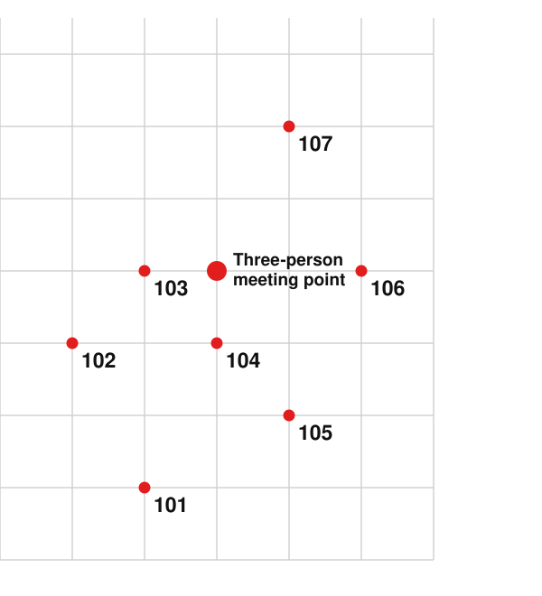
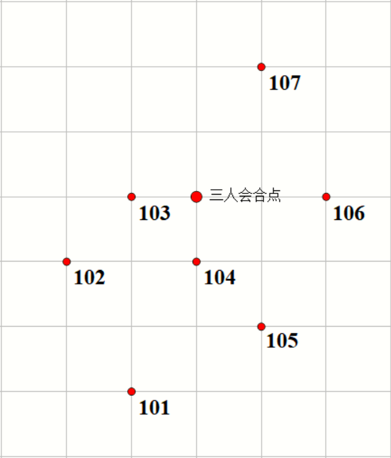

RPG JUMP
The following intel about this RPG game may, for now, be made public to the reader.
1. The Small Map
There are no signposts in the game, so the small map is rather important. It is essentially identical to the maps of real-world navigation software: a player may view important landmarks, the boss, and his or her own position (but cannot view other players).
The map is shown below. Up is north, down is south, left is west, right is east. The positions of Temples No. 101 through No. 107 are as follows (the exact center of each temple sits precisely on a grid point). On the map, each small cell represents a distance of one kilometer.

2. The Temple Teleport Mechanism
Every temple is fitted with a teleport magic circle. Every 50 minutes, the teleport circles inside all temples trigger in unison, instantly teleporting the players inside the temple to the nearest other temple, regardless of whether they are alive or dead.
If multiple temples are equally the nearest to the current temple, the teleport will jump randomly to one of them. (For example, if Temple A contains Player One and Player Two, and Temple B and Temple C are both equally nearest to Temple A, then there can be four outcomes: Player One goes to B and Player Two goes to C; Player One goes to C and Player Two goes to B; both go to B; both go to C.)
As for how "nearest" is determined, an empiricist rule is used: there is no need to fuss over trivialities such as whether it is planar distance or spatial distance, or where the reference point is set. One need only consider, in the game, a player setting out from the doorway of some Temple X (the position right up against the gate) and walking by the fastest possible route to the doorway of another temple; whichever takes the least time is regarded as nearest to Temple X, though there may be more than one such temple.
(Supplementary note: a corpse cannot walk, so the above rule cannot be applied to it directly. But when considering where a corpse will be teleported to, simply treat it as a living person.)
3. Some Basic Settings
All temples have identical decor: 40 meters on each side, 5 meters tall, with only a single door, one person wide, opening in the exact center of the west wall.
A player's movement speed in the game is fixed at 4 meters per second. Attack power, defense, maximum health, stamina, and so on can be raised through equipment, but attack range has an upper limit of at most a few tens of meters. No player has any special skills.
Part One: The Story Before Arriving at No. 104
* Alice
Might there be a treasure chest or something inside the temple before her? Alice spaced out for a moment before the tall stone walls. She had cleared all the small monsters nearby, yet they only dropped some gold and experience; perhaps it was time to try her luck. Thinking thus, she set her feet in motion.
The stone door was carved with the number 101. The door panel was quite heavy; gritting her teeth, she spent considerable effort to push it open, and after entering she pulled it shut again. But when she turned around to look about, the place was utterly empty, with nothing at all—truly disappointing. She did not stay, and was about to leave, when out of thin air four other people, each bearing a player marker, flashed into being before the door, blocking her way.
* Bob
If at this moment some busybody were to ask what he had done since coming to this world, Bob would only spread his hands and say helplessly, "From the spawn point I just kept walking south; if a monster got in the way I'd knock it down in passing." Saying it like that sounds rather offhand, but that is the truth. After all, with no special developments, it really is very boring. Idly he opened the shop, where one could see everyone's anonymous purchase records—basically weapons, armor, and the like. Bob had no interest in those; with the gold earned from killing monsters he bought a Poison Potion and a Wall-Pass Potion. When thrown, the Poison Potion deals splash damage to nearby targets and adds a one-minute lasting poison effect; the Wall-Pass Potion grants oneself a one-hour wall-passing effect. Now these things looked interesting.
Bob chuckled as he looked at the gear he had bought, when suddenly a temple-shaped building appeared before him. He circled around to the west side and took a glance: the door was wide open inward, and there was no one else. Why not try out this temple's wall, then? His playful streak roused, Bob used the Wall-Pass Potion on himself, ignored the wide-open door, and—still browsing the shop panel as he went—walked head-down straight at the wall, and really did pass through unobstructed. But when he came to his senses, there were, incredibly, four more people before his eyes.
* Claire
Was she perhaps the earliest player to discover the temple teleport mechanism? For some reason Claire felt rather pleased with herself. It was also a matter of fortunate timing, place, and people: when she crossed over into the RPG game, her spawn point happened to be right inside Temple No. 107. In the blink of an eye, her position on the small map changed, jumping to No. 106. Could the map be broken? While she was puzzling over this, the system popped up a notice.
"...for instance, if you stay here, then for you the next crossing may land randomly on 104, 105, or 107, because the time it takes you to walk to these three temples is exactly the same." Claire muttered the prompt aloud under her breath, and decided to try once more in a verifying frame of mind. After clearing a round of monsters outside Temple No. 106, once she reckoned the time was about right, she walked in once again. She did not know how long passed, but just as a boy came running over from afar and they met face to face, the scene before her eyes really did switch in an instant—from one face into four.
* David
As he ran past the front of Temple No. 106, David saw, from a distance, Claire at the temple's center vanish into thin air before his eyes. Could she turn invisible? Did one gain skills and the like after leveling up? Or was there an invisibility-potion item? Still, he had been planning to slack off anyway, so it was pointless to think about such things; better to keep running the map. He shook his head and kept dashing toward his own destination, No. 107.
* Iliya
What is this thing? Iliya stood before Temple No. 103, hesitated a few seconds, then pushed the door open and went in, but had taken only a few steps when she froze on the spot. Was she seeing things? She rubbed her eyes, but the several people before her were, no matter how she looked at them, genuine players just like herself. Could one buy some sort of mass-teleport item? Wasn't that way too bugged? Iliya opened the shop and fell into deep thought.
* Frick
Frick had been quietly waiting inside Temple No. 105 for a while now, having shut the door, yet still had not figured out how the system worked. After trying several more times, he finally brought up the small map. This is fun! He looked over his own position on the map, but in a moment that red dot jumped to another spot. Is it that inaccurate? Frick smacked his lips and raised his head—and his neck suddenly went stiff.
Part Two: The Story Before the Boss Descends
* Alice & Iliya
Alice was startled by the four people who had suddenly barged in; Iliya's face wore the same panic and confusion. Only Claire had an expression of having seen it all before, even thinking half-jokingly that, pixelated faces though they were, everyone's expressions were quite distinct. Fortunately the system, in good time, broadcast prompts separately to the four people other than Claire, and only then did the four learn of the crossing mechanic. Alice privately grumbled that the temple interiors were just too similar—as if copied outright for convenience—so that, setting aside the people who had appeared from nowhere, the scene before her after crossing was not the slightest bit different, and she, who had not looked at the small map, had very nearly failed to notice she had been teleported.
Several people began chattering and discussing, but once she had grasped the situation Alice had no heart to take part; with a brief word of notice she made to leave, saying she meant to rush back at top speed to finish clearing the monsters east of Temple 101, not daring to waste a single moment, and turned to go. Iliya had the very same intent, and followed close behind. Since the first stretch of the way back happened to be on the same route, she walked together with Alice, and they struck up a conversation.
"I was only dragged over here unwillingly in the first place; had I known there'd be no treasure chest, I'd have died before entering that wretched temple. While it's still the newbie-friendly stage, isn't it far more important to clear more monsters and level up quickly than to chat with people I'm completely unfamiliar with? I really don't get what they're thinking."
Iliya chimed in too: "Indeed. As for me, I still haven't dealt with the monsters on the west side. Everyone should learn from the two of us—go back to wherever you came from. Wasting time is, frankly, being a bit scatterbrained. Chatting isn't out of the question, but you've got to finish the real business first."
The two reached an agreement; not finishing off the monsters near home gives one a touch of obsessive-compulsiveness, and although they also wanted to go elsewhere and exchange information with people, leaving the job undone could never be justified. Halfway along, the two smiled, waved, and parted, then each went off to clear monsters. Right up until the alarm sounded, Alice was still within a few tens of meters around Temple No. 101, tirelessly dealing with newly spawned monsters.
* Bob & Claire & Frick
After Alice and Iliya left, the remaining three lingered a while longer inside Temple No. 104 chatting. But it was basically Frick asking and Claire answering, while Bob, as if he had seen a ghost, was still completely out of it and talking nonsense. So before long the group dispersed, each going about their own affairs. Claire vanished without a trace; Bob, for his part, went dashing about everywhere experiencing the wall-passing, and by chance ran into Frick and Iliya exchanging information near the spawn point. That was the last time he saw the two of them before being forcibly teleported into a temple.
* David
After stopping near No. 107, David could finally catch his breath. When he crossed over, his spawn point was in front of the door of No. 101; almost the instant he landed, he discovered the small map and the seven landmarks on it, and at lightning speed worked out a shortest route, going straight and direct so as to run, in the shortest time, from 101 through to 107 in order, as a stamp-collecting tour. After all, he had no interest whatsoever in fighting and killing; he would rather wander about—only, after the whole trip, he found that the temples were all damn well identical, and the nearby scenery quite monotonous, which was somewhat disappointing.
With no sense of crisis, David had goofed off right up to now. After resting, he finally got up to do something proper; otherwise, with not even a piece of equipment and his level too low, things would be rather hard to manage. So he went outside and, while walking, killed off a few monsters as they came, but very soon a red alarm popped up before his eyes.
Warning! The boss is about to appear; staying outside means certain death. The system will simultaneously force-teleport players into the temple nearest to each player and seal all temple doors shut by force; they may be unlocked only after the boss leaves. Players, please mind the small map. Good luck.
After the cold electronic voice finished, the six people still alive in the field appeared simultaneously inside the temples. The boss's icon soon popped up on the small map, too. Quite thoughtful, David secretly thought. According to the system prompt, the protective magic attached to the temple doors can withstand the boss's attacks; as long as one hides inside, one will be fine. Perhaps the teleport-circle setting was also meant to allow escape by teleporting elsewhere when surrounded? But this boss seems to be able to blink-teleport, so the system, being quite considerate, sealed all the doors so that no one can get out, and they can only be unlocked once the boss leaves. That's just as well; in short, simply staying put obediently is the right thing to do—probably one of those temporary, suddenly-triggered events in an RPG, just a formality to pass through, nothing will go wrong.
He probably never imagined that the danger would, on the contrary, come from within.
Part Three: The Story After the Incident
The moment the doors unlocked, Alice dragged Iliya's corpse and left straightaway, and without realizing it walked to near No. 104, where she happened to run into a player she did not know. The man, calling himself David, led her to the front of the No. 104 door to rendezvous with the main group, where she saw Bob and Claire, faces grave, arguing about something, and beside them, strikingly, was Frick—collapsed and not getting up, just like Iliya.
The four were lost for words for a long time before the two corpses on the ground. The game was rather crude; when taking damage one only loses health, leaving no wound on the body, so for the moment the cause of death was hard to judge. But after the boss arrived everyone had been shut inside the temples and could not possibly have come out; whether it was a natural disaster or a human act was, then, plain enough. It had originally been an absurdly simple segment, like an intermission—how had things come to this? Everyone wore an "I don't understand" expression, and an air of unease and suspicion gradually fermented and rose; only, no one was willing to speak first. And what utterly confirmed all of it was a single system broadcast——
"Iliya and Frick were killed by the same player. The main quest is changed to: find the murderer. Those who reason correctly may obtain a high reward."
Although prepared for it, on hearing such news the group could not help but draw a cold breath, falling into a long silence. The first to break the deadlock was Alice. "Just standing around won't do; how about everyone tells what happened inside the temple, in as much detail as possible, so we might find clues. I'll go first." Ignoring the others' looks of "maybe you're the murderer steering the narrative," she said in a firm voice——
"When the boss arrived, the temple I entered was No. 101. After going in I just idled about inside with nothing to do, all the while keeping my eyes glued to the red dot representing my position on the small map and watching the time. About thirty minutes after going in, I jumped to No. 104. When I lifted my gaze from the map, I was startled to find Iliya's corpse lying not far off. But honestly I didn't feel much; after all, we could hardly be called acquaintances, and to say I'd be saddened or frightened would be an outright lie. If I had to put it, I just felt it was very unreal."
"Once I'd recovered, I went up and examined her corpse, but didn't find much, nor did I think too deeply about it. I figured that with the doors sealed and no way out, by rights no one should be able to die; I didn't even consider the angle of a companion harming someone, and assumed she'd carelessly caused herself injury—so I just went on staring eagerly at the small map. Once the fifty-minute interval was up, I jumped again, this time to 103. Iliya's corpse came along too. Not long after, the system showed that the boss dragon had left and the doors were unlocked, so I took the corpse and slipped out, and then I ran into you all."
Alice cleared her throat lightly to end her statement. Although she had described the process of discovering Iliya's corpse in considerable detail, the others' suspicion seemed only to grow. Still, Bob took up the thread as agreed and continued. He recalled the situation at the time—at the very start he was force-sent into No. 104; there was nothing unusual then, and he too just stared at the small map to pass the time, and then after that...
"And then you ran into me."
"Right, right. I watched the time too; from when I went in it was also about half an hour, then that red dot suddenly flashed, and Claire was right before my eyes. She said she'd been teleported over from No. 106, and the two of us arrived at No. 105 together. It was a bit tense and a bit awkward then; the two of us paced about for ages, and I only found a topic to chat about after a while, so the room at least wasn't terrifyingly silent. Later, tired of talking, we split up to rest separately, and then the jump happened just as I'd relaxed. The two of us arrived together at No. 104."
Claire nodded to indicate complete agreement.
"On the second jump I was still spacing out; Claire and David both cried out and walked straight toward where the door was, and only then did I startle awake and discover Frick, dead, fallen at the temple's center. He lay face-down with his feet toward the door, one hand stretched straight out toward my side as if trying to grab something; the health bar above his head had already zeroed out, and his level had become Level 1—without doubt, already killed. I went up to help them, but couldn't make sense of it either. Not long after we'd finished looking at the corpse, the system announced the dragon had left; for the moment we couldn't sort out what had happened, so we went out at once, thinking to find a place to bury the corpse. We were just discussing it when you came over with fresh trouble."
"So the three of you were together the whole time after the second crossing, and you and Claire had been together ever since the first crossing. Mm, I suppose I understand now why you don't quite trust me; it seems I'm the only one who was alone the whole time." Alice smiled bitterly and asked again, "So, Claire, was there anything special before your first crossing?"
Claire only shook her head. "Nothing strange. The course of events after the second crossing is also more or less the same as what Bob said; at a glance I saw Frick lying in the dead center of the temple, as well as David, whom I'd met only once, standing in another corner. I was very anxious and went up to check the corpse as fast as I could, and so did David. But Frick was already lifeless by then. After the crossing, the three of us were each in different corners of the temple, all a good distance from the corpse, so it would certainly have been impossible for anyone to swiftly kill him."
David nodded and added: "I can testify—before Claire had even rushed up, Frick's health bar was already gone. It couldn't have been her getting in first to kill him. The other things Bob and Claire just said are all fine too."
The three corroborated one another; this stretch did indeed seem to be no lie. Alice nodded as if in thought. "Then only your movements remain to be pinned down. David, where were you on your first two crossings?"
"At the very start I took refuge inside Temple No. 107. Unlike you lot, I couldn't be bothered to keep checking the small map all the time; after all, I'd just run the whole map and killed monsters, so I was really worn out and lay down to sleep a while. Only on waking did I take a token glance at the small map, and the position suddenly flashed—it really did startle me, since I hadn't been with you all at first, and only then, when the prompt came up, did I learn there was such a thing as the teleport circle. I was teleported to Temple No. 106. Later, while spacing out, I was teleported again to No. 104. First I saw the dead man at the temple's center with his health bar zeroed, then from a distance a female knight ran over to look at the corpse, and a cloaked male mage arrived late... well, I mean those two. After they'd looked at the corpse they came and chatted with me a few words, and once the alarm was lifted we went out together. But I had no wish to get mixed up in their discussion, so I wandered around nearby for a little while and ran into you. That's pretty much the whole of it."
After a whole round of "home visits," nobody had untangled any thread, so Alice had everyone account for their movement tracks before the boss arrived as well, but this time the information content was even smaller—basically everyone acting separately; apart from Bob's mention that before the crossing he had by chance seen Iliya and Frick together, there were no other useful clues. Claire then proposed checking the shop, where one could see everyone's anonymous equipment-purchase information; most of the records were armor that adds health, weapons that add attack power, and so on, but there were also two especially eye-catching entries—those were the only two functional pieces of equipment with special effects: a Poison Potion and a Wall-Pass Potion.
"Ah, those two potions were bought by me." Bob hastily raised his hand to explain that he had bought these two things out of curiosity. And moreover he had used them up before all this. That seemingly somewhat dangerous Poison Potion was only used for killing monsters.
Such a statement clearly failed to dispel the others' doubts; everyone sized him up with strange looks. Although this potion could be used only once, who could guarantee that Bob wasn't lying? Nobody had special skills or special equipment; they could only attack at close range, and could not inflict lasting damage. The only one who could possibly have attacked the two before entering the temple, then used the poison's lasting-poison effect to kill them both, thereby achieving an unusual sort of alibi, was Bob; faced with this sole variable, one had to be cautious. Unfortunately there seemed to be no more evidence at hand, no way to judge the truth or falsity of the testimony. Someone or other let out a sigh, and the group once again sank into an everlasting silence.
RPG JUMP
本RPGゲームについて、現時点で読者に公開できる情報は以下のとおりである。
1. 小地図
ゲーム内には道標がないため、小地図は非常に重要である。これは現実のナビゲーションソフトの地図とほぼ同じで、プレイヤーは重要なランドマーク、ボス、そして自分自身の位置を確認できる（ただし他のプレイヤーは確認できない）。
地図は以下に示すとおりである。方向は上が北、下が南、左が西、右が東。101号から107号までの神殿の位置は次のとおりである（各神殿のちょうど中央が格子点の上に位置している）。地図上の一マスはそれぞれ一キロメートルの距離を表す。
2. 神殿の転送機構
すべての神殿には転送魔法陣が備わっており、50分ごとに、すべての神殿内の転送陣が一斉に発動し、神殿内のプレイヤーを、生死を問わず、最も近い別の神殿内へ瞬時に転送する。
もし複数の神殿が現在の神殿から等しく最も近い場合、転送はそのうちの一つへランダムに跳躍する（たとえば、A神殿内にプレイヤー一とプレイヤー二がいて、B神殿とC神殿がともにA神殿から等しく最も近いとすると、プレイヤー一がB、プレイヤー二がC；プレイヤー一がC、プレイヤー二がB；両者ともB；両者ともC、という四通りの場合が起こりうる）。
「最も近い」をどう判定するかについては、経験主義的な規則を採用する。平面距離か空間距離か、参照点をどこに置くか、といった些細な問題にこだわる必要はない。ゲーム内で、プレイヤーがあるX神殿の入口（門のすぐそばの位置）から出発し、最速の方法で別の神殿の入口まで歩いたとき、要する時間が最も少ないものをX神殿に最も近いとみなす、と考えればよい。ただしそのような神殿は一つとは限らない。
（補足：死体は歩けないため、上記の規則をそのまま適用することはできない。しかし死体がどこへ転送されるかを考える際には、生きている人として扱えばよい。）
3. いくつかの基本設定
すべての神殿は内装が同一で、縦横それぞれ40メートル、高さ5メートル、西側の壁の正中央にのみ、人一人分の幅の扉が一つ開いている。
ゲーム内のプレイヤーの移動速度は一定で、毎秒4メートルである。攻撃力、防御力、最大生命力、体力などは装備によって上げられるが、攻撃距離には上限があり、せいぜい数十メートルである。プレイヤーは誰も特殊技能を持たない。
一 104号へ転送される前の物語
* アリス
目の前の神殿の中には宝箱のようなものがあるだろうか？アリスは高くそびえる石壁を前に、しばし呆けていた。近くの雑魚モンスターはひととおり狩り尽くしたが、落ちるのは金貨と経験値ばかり。そろそろ運試しに行ってもいいかもしれない。そう思って彼女は足を踏み出した。
石の扉には数字の101が刻まれていた。扉板はなかなか重く、歯を食いしばってかなりの労力をかけてようやく押し開け、入ってからまた閉め直した。だが振り返って周囲を見回すと、そこはがらんとして何もなく、実に期待外れだった。彼女はとどまることなく立ち去ろうとしたが、扉の前に、プレイヤーマーカーを掲げた他の四人が突如として現れ、行く手を阻んだ。
* ボブ
もしこのとき物好きな誰かが、この世界に来てから何をしたのかと尋ねたなら、ボブはただ両手を広げて、困ったように「スポーン地点から南へひたすら歩いていただけだよ。途中で立ちふさがるモンスターがいたら、ついでに倒した」と答えるだけだろう。こう言うといささか気のないように聞こえるが、それが事実だった。何しろ特別な展開でもなければ、確かにとても退屈なのだ。彼は手持ち無沙汰にショップを開いた。そこには皆の匿名の購入記録が見られ、基本的には武器や鎧の類だった。ボブはそんなものには興味がなく、モンスターを倒して稼いだ金貨で毒薬と壁抜け薬を買った。毒薬は投げると周囲の対象に範囲ダメージを与え、さらに一分間持続する毒の効果を付与する。壁抜け薬は自分に一時間持続する壁抜けの効果を付与する。こういうものこそ面白そうだ。
ボブが買った装備を見てくすくす笑っていると、目の前に突如、神殿のような建物が現れた。彼は西側に回り込んで一目見た。扉は内側に大きく開け放たれており、他に誰もいない。ではこの神殿の壁で試してみるか？遊び心を起こしたボブは自分に壁抜け薬を使い、大きく開いた扉を無視して、壁に向かってショップのパネルをめくり続けながらうつむいて真っ直ぐ歩いて入っていくと、本当に何の妨げもなく通り抜けた。だが我に返ると、目の前には信じがたいことに、四人もの人間が増えていた。
* クレア
自分は神殿の転送機構を最も早く発見したプレイヤーではないだろうか？クレアはなぜか少し得意げだった。それは天の時、地の利、人の和でもあった。RPGゲームへ転移してきたとき、スポーン地点がちょうど107号神殿の中だったのだ。あっという間に、小地図上の位置が変動し、106号へ跳んでいた。地図が壊れたのだろうか？そう思案していると、システムが通知を表示した。
「……たとえばあなたがここにとどまるなら、あなたにとって次の転送はランダムに104、105、または107へ着く可能性があります。なぜなら、あなたがこの三つの神殿へ歩いていく所要時間はまったく同じだからです」クレアは小声でつぶやきながらその通知を読み終え、検証する気持ちでもう一度試してみることにした。106号神殿の外でひと回りモンスターを狩り終え、そろそろ時間だろうと見積もると、再び中へ入っていった。どれほど時間が経ったかわからないが、ちょうど少年が遠くから走ってきて顔を合わせたそのとき、目の前の光景は本当に瞬時に切り替わり、一つの顔から四つの顔になった。
* デイビッド
106号神殿の前を走り過ぎたとき、デイビッドは遠くから、神殿中央のクレアが目の前で忽然と消えるのを見た。まさか透明になれるのか？レベルアップすると技能のようなものが手に入るのか？それとも透明化薬のようなアイテムがあるのか？とはいえ、自分はもともとサボるつもりだったので、そんなことを考えても仕方がない。マップ巡りを続けたほうがいい。彼は首を振り、自分の目的地である107号へ向かって走り続けた。
* イリヤ
これは何なのだ？イリヤは103号神殿の前に立ち、数秒ためらったが、それでも扉を押し開けて入った。しかし数歩歩いたところでその場に凍りついた。見間違いだろうか？目をこすってみたが、目の前の数人は、どう見ても自分と同じく正真正銘のプレイヤーだった。まさか集団転送のようなアイテムが買えるのか？バグすぎないか？イリヤはショップを開き、深く考え込んだ。
* フリック
フリックは扉を閉めて、105号神殿の中で静かにしばらく過ごしていたが、それでもシステムの使い方がわからなかった。さらに何度か試して、ようやく小地図を呼び出した。これは面白い！彼は地図上で自分の位置を眺めていたが、ほんの一瞬でその赤い点が別の場所へ跳んだ。そんなに不正確なのか？フリックは舌打ちして顔を上げ——首が突然こわばった。
二 ボスが降臨する前の物語
* アリス & イリヤ
アリスは突然乱入してきた四人に驚かされ、イリヤの顔にも同じ慌てと困惑が浮かんでいた。ただクレアだけが見慣れたような表情で、半ば冗談めかして、ピクセルの顔とはいえ皆の表情はずいぶんはっきりしているものだ、とさえ思っていた。幸いシステムが頃合いよく、クレア以外の四人にそれぞれ通知を流したので、四人はようやく転送の設定を知った。アリスは内心、神殿内部の内装の似通い具合があまりにも高すぎる、まるで手間を省いてそのままコピーしたかのようだ、とこぼした。だから突如現れた数人を別にすれば、転送後に目の前にある光景は寸分も違わず、小地図を見ていなかった彼女は、転送されたことに危うく気づかないところだった。
何人かがぺちゃくちゃと議論を始めたが、状況を把握するとアリスは加わる気にもなれず、一言断っただけで立ち去ろうとした。最速で戻って101号神殿の東側のモンスターを狩り尽くすつもりだ、一刻も無駄にできない、と言って踵を返した。イリヤもまさに同じ考えで、すぐ後に続いた。戻る道のりの最初の一区間がちょうど同じ方向だったので、アリスと連れ立って歩きながら、話を交わし始めた。
「そもそも気の進まないまま無理やり転送されてきたんだもの。宝箱がないと知っていたら、死んでもあんなボロ神殿には入らなかったわ。今はまだ初心者に優しい段階なんだから、もっとモンスターを狩って早くレベルを上げるほうが、まったく親しくない連中とおしゃべりするよりずっと大事じゃない？あの人たちが何を考えているのか、本当に理解できないわ。」
イリヤも相づちを打った。「確かに。私はと言えば、まだ西側のモンスターを片付けていないの。みんな私たち二人を見習うべきよ。来たところへ戻りなさいって。時間を無駄にするなんて、正直ちょっと考えが足りないわ。おしゃべりするのは構わないけど、まずは本来の用事を済ませてからね。」
二人は意見が一致した。家の近くのモンスターを狩り終えないと少し強迫観念じみたものを感じるし、他の場所へ行って人と情報を交換したい気持ちもあったが、用事を済ませないまま離れるのはやはり筋が通らない。途中まで来たところで、二人は笑顔で手を振って別れ、それぞれモンスター狩りへ向かった。警報が鳴るまで、アリスは依然として101号神殿の周囲数十メートル以内にとどまり、飽きることなく新たに湧いてくるモンスターを相手にしていた。
* ボブ & クレア & フリック
アリスとイリヤが去った後、残りの三人は104号神殿の中でさらにしばらく雑談していた。だが基本的にはフリックが尋ねクレアが答えるばかりで、ボブときたら幽霊でも見たかのように、まだまったく上の空で、つじつまの合わないことを言っていた。そのため間もなく一行は解散し、それぞれ自分のことをしに行った。クレアは行方知れずになり、ボブはといえばあちこち走り回って壁抜けを体験し、たまたまスポーン地点の近くでフリックとイリヤが情報交換しているのに出くわした。それが、神殿へ強制転送される前に二人を見た最後だった。
* デイビッド
107号の近くで足を止めた後、デイビッドはようやく一息つけた。彼が転移してきたとき、スポーン地点は101号の扉の前だった。ほぼ着地した瞬間に、小地図とその上の七つのランドマークを発見し、電光石火の速さで最短ルートを思いつき、真っ直ぐに、最短時間で101から順に107まで走り抜けるスタンプラリーの旅をした。何しろ彼は戦いや殺し合いの類にはまったく興味がなく、あちこち見て回るほうがましだったのだ。ただ、ひと巡りしてみると、神殿はどれもこれもまったく同じで、近くの景色もずいぶん単調で、いくらか期待外れだった。
危機感のないデイビッドは、こうして今までだらだら過ごしてきた。休み終えると、彼はようやく腰を上げてまともなことをしようとした。さもないと装備の一つもなく、レベルも低すぎて、いろいろと厄介だからだ。そこで外へ出て、歩きながら行きがかりに何匹かモンスターを片付けたが、ほどなくして、目の前に赤い警報が表示された。
警告！ボスが間もなく出現する。外にとどまれば必ず死ぬ。システムは同時にプレイヤーを各自に最も近い神殿内へ強制転送し、神殿の扉をすべて強制的に施錠する。ボスが立ち去った後にのみ解錠できる。プレイヤーは小地図に注意せよ。幸運を。
冷たい電子音が終わると、フィールドに生き残っていた六人は同時に神殿の内部に現れた。小地図上にも、ほどなくボスのアイコンが表示された。なかなか気が利いている、とデイビッドはひそかに思った。システムの通知によれば、神殿の扉に付与された防護魔法はボスの攻撃を防げる。中に隠れてさえいれば無事だ。転送陣の設定も、おそらく取り囲まれたときに別の場所へ転送して脱出できるようにするためか？だがこのボスはどうやら瞬間移動できるらしい。だからシステムはずいぶん気を遣って、扉をすべて施錠し、誰も出られないようにし、ボスが立ち去った後にのみ解錠できるようにしたのだ。それも結構なことだ。要するに、おとなしくじっとしていればそれでいい。おおかたRPGゲームによくある、その場限りの突発イベントで、形だけ通り過ぎるだけのこと、何も起こりはしないだろう。
危険がかえって内部から来ようとは、彼はおそらく思いもよらなかっただろう。
三 事件が起きた後の物語
扉が解錠された途端、アリスはイリヤの死体を引きずって真っ直ぐ立ち去り、知らず知らずのうちに104号の近くまで歩いてきて、ちょうど見知らぬプレイヤーに出くわした。デイビッドと名乗るその男は、彼女を104号の扉の前へ連れて行き、本隊と合流させた。そこにはボブとクレアが、深刻な面持ちで何かを言い争っており、その傍らには、なんとイリヤと同じように倒れて起き上がらないフリックがいた。
四人は地面に横たわる二つの死体を前に、長いこと言葉を失った。ゲームはわりと簡素で、ダメージを受けたときは生命力が減るだけで、体に傷跡は残らないため、さしあたり死因を判断するのは難しかった。だがボスが来てから皆は神殿の中に閉じ込められて出てこられるはずがなく、天災か人災かと言えば、もはやあまりにも明らかだった。もともとは中休みのような、呆れるほど単純な場面だったのに、どうしてこんなことになったのか？皆が「わからない」という表情を浮かべ、不安と疑念の空気が次第に発酵して立ちのぼっていったが、ただ誰も率先して口を開こうとはしなかった。そしてそれらをすっかり裏づけたのは、システムの一つの放送だった——
「イリヤとフリックは同一のプレイヤーによって殺害された。メインクエストを変更する——犯人を見つけ出せ。正しく推理した者は高額の報酬を得られる。」
覚悟はしていたものの、こんな知らせを聞いて、一同はやはり思わず冷たい息を呑み、長い沈黙に陥った。真っ先に膠着を破ったのはアリスだった。「ずっと突っ立っていても仕方ないわ。みんなで神殿の中での出来事を、できるだけ詳しく話してみるのはどう？そうすれば手がかりが見つかるかもしれない。まずは私からね。」他の数人の「もしかしたらあんたが犯人で話を誘導しているのでは」という視線を無視して、彼女はきっぱりとした声で言った——
「ボスが来たとき、私が入ったのは101号神殿だった。入った後はただ中で何もすることなくぶらぶらして、小地図上の自分の位置を表す赤い点をじっと見つめながら、時間も見ていたわ。入っておよそ三十分後かしら、104号へ跳んだの。視線を地図から上げると、驚いたことに、すぐ近くにイリヤの死体が横たわっているのを見つけたわ。でも正直あまり感慨はなかった。何しろ知り合いとも言えないし、悲しいとか怖いとか言ったら、それは絶対に嘘になる。強いて言えば、ただとても現実味がないと感じただけよ。」
「我に返ってから、私は近づいて彼女の死体を調べたけれど、たいした発見もなく、深くも考えなかった。扉が施錠されて出られない以上、道理から言えば誰も死ぬはずがないと思っていたし、仲間が人を傷つけるなんて方向すら考えず、彼女が不注意で自分に傷を負わせたのだろうと思って、それでまた一心に小地図を見つめ続けたの。五十分の間隔が来ると、私はまた103号へ跳躍した。イリヤの死体も一緒についてきたわ。ほどなくしてシステムがボスの竜は立ち去り、扉はすでに解錠されたと表示したので、私は死体を連れて抜け出して、その後あなたたちに出会ったというわけ。」
アリスは軽く咳払いをして発言を終えた。イリヤの死体を発見した経緯をかなり詳しく描写したにもかかわらず、数人の疑いはむしろ増すばかりのようだった。それでもボブは約束どおり話を引き継いで続けた。彼は当時の状況を思い出した——最初は104号へ強制的に送り込まれ、そのときは何も異常はなく、やはり小地図を見つめて時間をつぶしていた。それからその後は……
「それであんたが俺に出会ったってわけだ。」
「そうそう。俺も時間を見ていた。入ってからやはり三十分ほど経った頃、あの赤い点が突然ぴかっと光って、クレアが目の前にいたんだ。彼女は106号から転送されてきたと言って、俺たち二人は一緒に105号へ着いた。あのときはちょっと緊張して、ちょっと気まずくて、彼女とそれぞれしばらく行ったり来たりして、ようやく話題を見つけて話し始めて、部屋がぞっとするほど静かにならずに済んだんだ。その後、話し疲れて別れてそれぞれ休んでいたら、俺が気を緩めたときに跳躍が起きた。俺たち二人は一緒に104号へ来たんだ。」
クレアはうなずいて、まったく同意であることを示した。
「二回目の跳躍のとき、俺はまだぼんやりしていた。クレアとデイビッドはそろって悲鳴を上げながら扉のある方向へ真っ直ぐ歩いて行って、それでようやく俺ははっと目が覚めて、神殿の中央で死んでいるフリックを見つけたんだ。彼は足を扉のほうに向けてうつ伏せに倒れ、片手を俺のほうへ真っ直ぐ伸ばして、何かをつかもうとしているかのようだった。頭上の生命力バーはすでにゼロになり、レベルも1になっていて、間違いなくもう殺されていた。俺は二人を手伝いに前へ出たが、やはり見当もつかなかった。死体を見終えてほどなくして、システムが竜はすでに立ち去ったと告げたんだ。俺たちはさしあたり何が起きたのか整理がつかなかったので、すぐに外へ出て、どこかに死体を埋める場所を探そうと考えた。その相談をしていたところへ、あんたが新たな厄介事を抱えてやって来たんだ。」
「つまり、あなたたち三人は二回目の転送の後ずっと一緒にいて、あなたとクレアは一回目の転送の後からずっと一緒だったってことね。ふむ、あなたたちが私をあまり信用しない理由がわかってきたわ。どうやら、ずっと一人きりだったのは私だけみたいね。」アリスは苦笑して、また尋ねた。「それでクレア、あなたは一回目の転送の前に何か特別なことはあった？」
クレアはただ首を振った。「おかしなことは何も。二回目の転送の後の経緯もボブの言ったこととほとんど同じよ。私は一目で神殿のど真ん中に横たわるフリックと、別の隅に立っている、一度会ったきりのデイビッドを見たわ。私はとても焦って、できるだけ速く近づいて死体を調べた。デイビッドもそうだった。でもフリックはそのときにはもう息がなかった。転送の後、私たち三人はそれぞれ神殿の別々の隅にいて、死体からはどちらもかなり距離があったから、素早く手を下して人を殺すなんて絶対に無理だったわ。」
デイビッドもうなずいて付け加えた。「俺が証言する。クレアが前まで駆けつける前から、フリックの生命力バーはすでに見えなくなっていた。彼女が真っ先に手を下して人を殺したなんてありえない。ボブとクレアがさっき言った他のこともすべて問題ない。」
三人は互いに裏づけ合った。この部分は確かに嘘ではないようだった。アリスは考え込むようにうなずいた。「それなら、あとはあなたの動きを確かめるだけね。デイビッド、あなたは最初の二回の転送のとき、どこにいたの？」
「最初は107号神殿の中に避難していた。あんたたちと違って、俺はずっと小地図を気にかけるのが面倒でね。何しろマップ中を走り回ってモンスターも狩った直後で、本当にくたびれていたから、横になってしばらく眠ったんだ。目が覚めてやっと形ばかり小地図を見たら、位置が突然ぴかっと光って、本当に驚かされたよ。何しろ俺は最初あんたたちと一緒じゃなかったから、そのとき通知が出てようやく、転送陣なんてものがあると知ったんだ。俺は106号神殿へ転送された。その後ぼんやりしていたら、また104号へ転送された。最初に神殿中央の生命力バーがゼロになった死人を見て、それから遠くから女騎士が走り寄って死体を見に行き、マントを羽織った男魔法使いが遅れて来て……まあ、その二人のことだ。彼らは死体を見終えると俺のところへ来て二言三言話し、警報が解除されると一緒に外へ出た。だが俺は彼らの議論に加わる気はなく、近くを少しの間ぶらついて、あんたに出会った。一部始終はだいたいそんなところだ。」
ひととおりの「家庭訪問」を終えても、皆は手がかりの糸口一つほぐせなかったので、アリスは皆にボス降臨前の行動の軌跡も一度説明させた。だが今度は情報量がさらに少なく、基本的には皆が別々に行動していた。ボブが転送前にたまたまイリヤとフリックが一緒にいるのを見たと言及したほかには、他に役立つ手がかりはなかった。そこでクレアはショップを確認することを提案した。そこには皆の匿名の装備購入情報が見られ、記録の大半は生命力を増やす鎧や攻撃力を増やす武器などだったが、ひときわ目を引く二件があった——それは唯二の、特殊効果を持つ機能型装備、一瓶の毒薬と一瓶の壁抜け薬だった。
「ああ、その二瓶の薬は俺が買ったんだ。」ボブは慌てて手を挙げ、好奇心からこの二つを買ったのだと説明した。しかもこれより前にすべて使い切っていた。いささか危険そうなあの毒薬は、ただモンスターを狩るのに使っただけだ、と。
こうした発言は明らかに他の者の疑念を払拭できず、数人は皆おかしな目で彼を値踏みした。この薬は一度しか使えないとはいえ、ボブが嘘をついていないと誰が保証できよう？皆は特殊技能も特殊装備も持たず、近距離でしか攻撃できず、持続ダメージも与えられない。神殿に入る前に二人を攻撃し、それから毒の持続中毒効果を利用して二人を殺し、もって変則的なアリバイを成立させることが可能だった唯一の人物は、ボブだけだった。この唯一の変数を前に、慎重にならざるを得なかった。あいにく目下これ以上の証拠はないようで、証言の真偽を判断する術がなかった。誰かのため息が一つ漏れ、一同は再び果てしない沈黙に陥った。
RPG JUMP
关于本RPG游戏，目前可以公开给读者的情报。
1. 小地图
游戏中没有路标，故小地图相当重要。其与现实中的导航软件的地图基本一致，玩家可查看重要地标、boss及本人所在位置（但无法查看其他玩家）。
地图如下所示。方向为上北下南左西右东。101至107号神殿位置如下（神殿的正中央刚好位于格点上）。地图上每一小格距离代表一公里。

2. 神殿传送机制
每个神殿都附有传送魔法阵，每隔50分钟所有神殿内的传送阵会统一触发，将神殿内玩家瞬间传送至距离最近的另一神殿内，不论生死。
若有多个神殿距离当前所在神殿最近，则传送时会随机跳跃至其中之一（比如A神殿内有玩家一、玩家二，B神殿和C神殿都距离A神殿最近，则可能出现玩家一传到B，玩家二传到C；玩家一传到C，玩家二传到B；二者都传到B；二者都传到C共四种情况）。
关于如何判定距离最近，采用的是经验主义式的规则：无需纠结是平面距离还是空间距离，参考点设在哪等细枝末节的问题。只需看游戏里玩家从某X神殿门口（紧邻大门位置）出发以最快方式走到其他神殿门口，用时最少者即视为距X神殿最近，但可能不唯一。
（补充：尸体不能走动，无法套用以上规则。但考虑尸体会被传送到哪时将其视作活人即可。）
3. 一些基础设定
所有神殿装潢均一致，长宽各40米，高5米，只在西侧墙体正中开有一扇一人宽的门。
游戏中玩家的移速固定，为4米每秒。攻击力、防御力、最大生命值、体力值等可通过装备提升，但攻击距离有上限，最多几十米。玩家均无特殊技能。
一 穿越到104号前的故事
* 爱丽丝
面前的神殿里会不会有宝箱一类的东西？爱丽丝对着高大的石墙短暂失神。把附近的小怪都刷了个遍，却只掉落些金币经验，兴许是该去碰碰运气。她如是想着迈动了脚步。
石门上刻有数字101，门板还挺沉，她咬咬牙费了好些工夫才推开，进去后又顺手关紧。可一转头环顾四周却是空荡荡的啥也没有，真是相当失望。她没作停留就要离开，门前却凭空闪现出其他四个顶着玩家标的人，挡住了她的去路。
* 鲍勃
倘若这时有好事者问起自己来这世界后都做了些啥，鲍勃也只会摊摊手无奈道"从出生点一路向南一直走，途中有拦路的怪就随手打掉"吧。这么说多少有些漫不经心，但事实如此。毕竟没什么特别的展开的话，确实就很无聊啊。他百无聊赖地打开商城，里面能看到大家的匿名购买记录，基本都是武器、铠甲一类的。鲍勃对这些可没兴趣，拿打怪赚的金币买了个毒药水和一个穿墙药水。毒药水丢出后会对附近目标造成溅射伤害并附加一分钟的持续中毒效果，穿墙药水则是可对自己附加一个小时的穿墙效果。这些玩意看着才有意思。
鲍勃看着买来的装备咯咯笑着，眼前却忽地出现了神殿模样的建筑。他绕到西侧瞄了一眼，门朝里大敞着，并无别人。要不就拿这个神殿的墙试试水吧？玩心大起的鲍勃对自己用完穿墙药水，无视大开的门，对着墙一边继续翻看商城面板一边低头直直走了进去，还真的畅通无阻。可等回过神来，眼前竟不可思议般多出了四人。
* 克莱尔
自己应该是最早发现神殿传送机制的玩家？克莱尔不知为何有些得意。也算是天时地利人和，穿越进RPG游戏时，出生点正巧就在107号神殿内。转眼的工夫，小地图上的位置就发生了变动，跳转到了106号。地图会不会坏了？她正琢磨着，系统便弹出了提示信息。
"……比如您待在这，则对您来说下次穿越时可能会随机到104、105或107，因为您走到这三个神殿用时完全相同"克莱尔小声嘀咕着念完提示，决定抱着验证的心态再试一次。在106号神殿外边刷完一圈怪，估摸时间差不多后，便再度走了进去。也不知过了多久，刚好有个男生远远跑来打了个照面时，眼前的场景真的瞬间发生了切换，从一张脸变成了四张。
* 大卫
跑过106号神殿门前时，大卫远远看到神殿中央的克莱尔在眼前凭空消失。莫非她会隐身不成？升级后就能获得技能啥的？还是有隐身药水这种道具？不过自己本就打算摆烂来着，想这些也没用，还是继续跑图好了。他摇摇头继续朝自己的终点107号奔去。
* 伊莉雅
这是什么玩意？伊莉雅站在103号神殿前，犹豫了几秒还是推门而入，可没走几步便愣在原地。是自己眼花了吗？她揉了揉眼，但眼前几位无论怎么看都是和自己一样的货真价实的玩家。莫非能买到啥群体传送的道具？太bug了吧？伊莉雅打开商城陷入了沉思。
* 弗里克
弗里克关上门安安静静待在105号神殿里已经有一会了，却还是没搞懂系统的用法。又试了好几下，终于调出了小地图。这个好玩！他对着地图翻看起自己所在的位置，可才一会那个红点便跳转到了另一处。这么不准吗？弗里克咂咂嘴抬起头来，脖子却突然僵住。
二 boss降临前的故事
* 爱丽丝 & 伊莉雅
爱丽丝被突然乱入的四人吓了一跳，伊莉雅脸上也是同样的惊慌与困惑，只有克莱尔一副见怪不怪的表情，甚至半开玩笑地想着，虽然是像素脸，但大家的表情都很分明呢。好在系统适时向除克莱尔外的四人分别播报了提示，四人这才知晓穿越设定。爱丽丝暗暗埋怨神殿内部装潢的相似度未免太高，像是图方便直接copy的，所以撇开凭空出现的几人不算，穿越后眼前场景根本就分毫不差，没看小地图的她还真差点没察觉到已被传送。
有几人叽叽喳喳地开始议论起来，但弄清状况后爱丽丝便无心参与，简单知会一声就要走，说是要用最快速度赶回去把101神殿东边的怪刷完，一刻不敢耽搁转身就走。伊莉雅也正有此意，紧跟了上去。回去的时候前面一段刚好顺路，便与爱丽丝同行，一边聊了起来。
"本来也就是不情不愿被迫跳转过来的，要早知道没有宝箱我打死都不会进那个破神殿。趁现在还是新人友好阶段多刷点怪快点升级，不是比和完全不熟的家伙聊天要紧得多吗？真搞不懂他们咋想的。"
伊莉雅也附和道："确实，我是西侧的怪还没打。大家都该向咱俩学习，哪来的就回哪去，还浪费时间多少是有点神经大条了。要聊天也不是不行，但也得先干完正事再说。"
两人达成了一致，家附近的怪没刷完总有点强迫症，虽然也想去别的地方和人交换情报，但不先弄完总说不过去。行至中途，两人微笑着挥手分别，随即便各自刷怪去了。直到警报响起时，爱丽丝仍旧待在101号神殿周围几十米内，乐此不疲对付着新刷出来的怪。
* 鲍勃 & 克莱尔 & 弗里克
爱丽丝和伊莉雅走后，其余三人在104号神殿里又扯了有一阵。不过基本是弗里克在问克莱尔在答，鲍勃则像是活见鬼一样，整个人还在状况外，前言不搭后语。于是没过多久几人就散了，继续各干各的。克莱尔不知所踪，鲍勃倒是又四处乱窜体验穿墙，还偶然在出生点附近撞见弗里克跟伊莉雅交换情报。那就是被强制传送进神殿前见到两人的最后一面了。
* 大卫
在107号附近停下后，大卫总算能喘口气。他穿越过来时出生点在101号门前，几乎是刚一落地，就发现了小地图和上面的七个地标，便光速想了条最短路线，直来直去地以最短时间从101按顺序跑到107来上一次打卡旅行。毕竟他对打打杀杀什么的压根不感兴趣，还不如到处逛逛，只是一趟下来发现神殿特么都一个样，附近景色也很单调，多少有些失望。
无甚危机感的大卫就这么摸鱼到了现在。休息完毕后他总算起身要干点正事，不然连个装备都没有，等级又太低，实在不大好办。他就出去外面一边走一边随缘刷掉几个怪，但很快，眼前就弹出了红色的警报。
注意！boss即将出现，留在外面必死无疑。系统会将玩家同时强制传送到距玩家最近的神殿内并将神殿门全部强行锁死，boss离开后方可解锁。请玩家注意小地图。祝好运。
冰冷的电子音结束后，场上仍存活的六人便同时出现在了神殿内部。小地图上也很快弹出boss的图标。还蛮贴心，大卫暗自想。看系统提示，神殿门上附带的防护魔法可以抵挡boss攻击，只要躲里面就不会有事。传送阵的设定，或许也是便于在被围困时，能传送到另一处脱身？不过这boss似乎会瞬移，所以系统挺照顾地把门都锁死，所有人都出不去，等boss走了方能解锁。这样也好，总之老老实实待着就对了，大概就是RPG游戏里那种临时触发的突发事件，走个过场而已，不会有事的。
他大概没想到，危险反倒会来自内部吧。
三 事件发生后的故事
门刚一解锁，爱丽丝便拖着伊莉雅的尸体径直离开，不知不觉走到了104号附近，刚好撞见一个不认识的玩家。自称大卫的男人将她领到104号门前与大部队会合，只见鲍勃与克莱尔神色凝重地正在争执些什么，而在他们旁边，赫然是和伊莉雅一样倒地不起的弗里克。
四人对着地上的两具尸体久久失语。游戏比较简陋，受到伤害时只会扣血，不会在身上留下伤痕，一时也难以判断死因。不过boss来临后大家都被关在神殿里不可能出来，要说是天灾还是人祸，倒也再明显不过。本来只是简单到不得了，像是中场休息的环节，事情怎么就演变成这样了呢？大家都一副"我不明白"的表情，不安与猜忌的气息渐渐发酵升腾开来，只是谁都不肯率先开口。而将这些彻底坐实的是系统的一则播报——
"伊莉雅与弗里克系同一玩家击杀。主线任务改为找出凶手。推理正确者可获得高额奖励。"
尽管早有准备，但听到这样的消息，众人还是不免倒吸一口凉气，陷入漫长的沉默。率先打破僵局的是爱丽丝。"一直呆着也不是办法，要不大家都说说在神殿内的经过，尽可能详细点，这样才可能发现线索。就由我先开始吧。"无视其他几人"说不定你就是凶手在带节奏"的目光，她正声道——
"boss来临时我进的是101号神殿。进去后也只是在里头无所事事闲逛，一边紧盯着小地图上代表自己位置的红点，一边看时间。进去大概三十分钟后吧，跳到了104号。把视线从地图上移开，才惊讶地发现不远处躺着伊莉雅的尸体。不过说实话我并没多少感觉，毕竟算不上认识，要说会伤心、害怕那绝对是扯谎。硬要说就是觉得很不真切吧？"
"缓过神后我就上去检查了她的尸体，但没太多发现，也没去细想。我是觉得门锁死了出不去，按理不会有人死掉的，甚至没往同伴伤人这方面想，以为是她不小心对自己造成了伤害，反正就继续眼巴巴盯着小地图了。五十分钟的间隔一到，我又再度跳跃到103。伊莉雅的尸体也跟着过来。不久后系统显示boss巨龙离开，门已解锁，我就带上尸体溜出去，后边就遇到你们了。"
爱丽丝轻咳一声结束发言。尽管她对发现伊莉雅尸体的过程描述得相当详尽，但几人的怀疑似乎有增无减。不过鲍勃也按照约定接过话头继续。他回忆起当时的情形——最开始是被强制送进104号，那时并无异常，也是就盯着小地图消磨时间，再然后……
"然后你就遇到我了啊。"
"对的对的。我也看时间了，自打进去也是过了差不多半小时吧，那红点突然一闪，克莱尔就在我眼前了。她说她是从106号传过来的，我俩一块到了105号。那会有点紧张也有点尬，跟她各自踱步半天，我才找个话题谈起天来，屋里总算不至于安静得太吓人。后面聊累了就分开各自歇息去，结果在我放松的时候发生了跳跃。我俩一块来到了104号。"
克莱尔点头表示完全同意。
"第二回跳跃时我还在发呆，克莱尔和大卫则双双惊叫着朝门所在的方向直直走去，我这才惊醒过来，发现倒在神殿中央死去的弗里克。他脚对着门趴倒在地，一只手直直伸向我这边像要抓住什么一样，头顶的血条已经清零，等级也变成了1级，毫无疑问已经遇害。我上前去帮他们，但也看不出门道。也是看完尸体不久，系统就提示说巨龙已离开，我们暂时理不清是怎么回事，就第一时间出去，想着找个地方把尸体给埋了。我俩正商量着呢，你就带着新麻烦过来了。"
"也就是说你们三个在第二次穿越后一直在一起，你和克莱尔则是第一次穿越后就在一起。嗯，我算是知道你们为什么不太相信我了，好像就我一个一直是落单的。"爱丽丝苦笑着便又问道，"那克莱尔你第一次穿越前有什么特别的吗？"
克莱尔只是摇头。"没啥奇怪的事。第二次穿越后的经过也和鲍勃说的大差不差，我一眼就看到躺在神殿正中的弗里克，以及站在另一个角落里，仅有过一面之缘的大卫。我很着急，尽可能快地上前查看尸体，大卫也是。但弗里克那时就已经没气了。穿越后我们仨各自分处神殿的不同角落，距离尸体都有好一段距离，所以快速动手把人杀掉肯定是做不到的。"
大卫也点头补充道："我作证，克莱尔还没冲到面前，弗里克的血条就已经看不见了。不可能是她抢在最前面动手杀人。鲍勃和克莱尔刚刚说的其它那些也都没啥毛病。"
三人互相印证，看来这一段的确不假。爱丽丝若有所思般点了点头。"那只剩你的动向没确定了。大卫，你前两次穿越时都在哪？"
"最开始是在107号神殿里避难。和你们几个不一样，我懒得一直光顾小地图，毕竟才满地图跑完还刷了怪，实在累得很，就躺下睡了会，醒来才象征性看眼小地图，结果位置突然一闪还真有被惊到，毕竟我最开始没和你们一块，直到那时出了提示，我才知道还有传送阵这回事。我是被传到106号神殿。后面发着呆时又传到了104号。先是看到神殿中央血条清零的死人，然后远远地有个女骑士跑过去看尸体，一个披斗篷的男法师姗姗来迟……嘛说的就是他俩。他们看过尸体找我聊了几句，等解除警报后就一块出去了。不过我无意掺和他们的讨论，到附近转了一小会遇到你。整个过程差不多就这样了。"
一通家访流下来，大家也没理出个头绪，爱丽丝又让大家都交代一遍boss来临前的行动轨迹，可这回信息量就更小了，基本都是分散行动；除了鲍勃提到他在穿越前曾偶然看到伊莉雅和弗里克在一起，再无其他有用线索。克莱尔则提议查看商城，里面能看到大家匿名购买装备的信息，记录里大多都是加血量的护甲，加攻击力的武器等，但也有两条格外惹眼——那是唯二的，有特殊效果的功能型装备，一瓶毒药水和一瓶穿墙药水。
"啊，这两瓶药水是我买的。"鲍勃连忙举手解释道，自己是出于好奇买了这两样玩意。而且在这之前都用掉了。那瓶似乎有些危险的毒药水只是用来打怪。
这般发言显然未能打消别人的疑虑，几人都用奇怪的眼神打量着他。尽管这药水只能用一次，但谁又能保证鲍勃没说谎呢？大家都没特殊技能或是特殊装备，只能近距离攻击，也无法造成持续伤害。唯一有可能在进入神殿前攻击两人，再利用毒药的持续中毒效果杀死两人，以达成别样的不在场证明的，只有鲍勃，面对这唯一的变数不得不谨慎。可惜眼下似乎没有更多证据，无从判断证言真伪。不知是谁一声叹气，众人也再一次陷入了恒久的沉默。